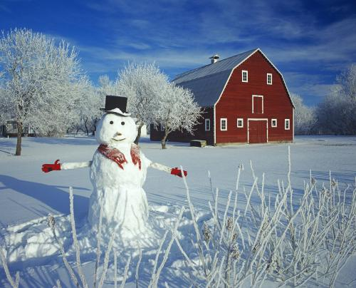
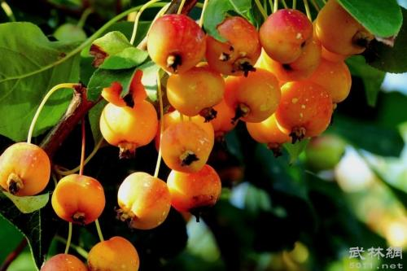
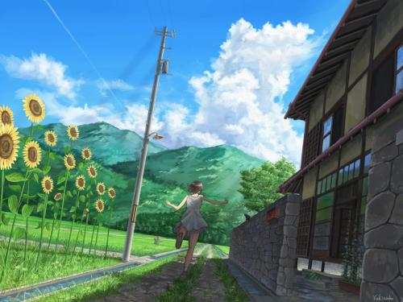
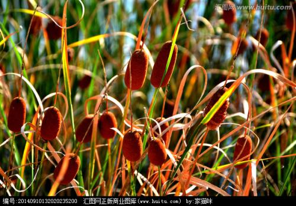
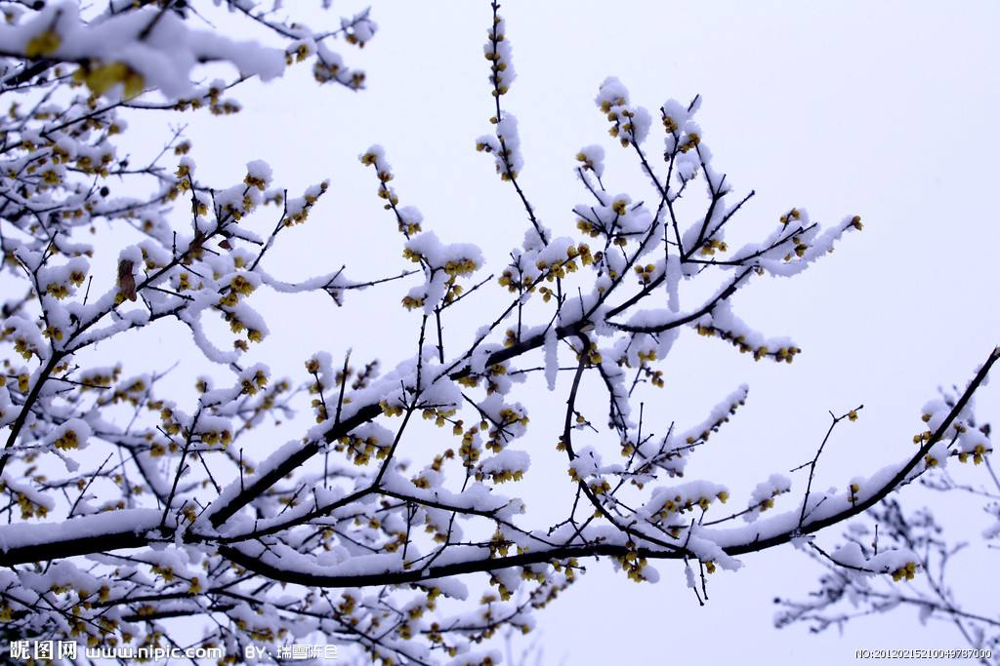

二十四节气
(按公元月日计算)
春季：
2月3--5日交节 [立春(节气)，黄经315度]； 2月18--20日交节[雨水(中气)，黄经330度]；
3月5--7日交节 [惊蛰(节气)，黄经345度]； 3月20--22日交节[春分(中气)，黄经 0 度]；
4月4--6日交节 [清明(节气)，黄经15度 ]； 4月19--21日交节[谷雨(中气)，黄经30 度]；
夏季：
5月5--7日交节 [立夏(节气)，黄经45度 ]； 5月20--22日交节[小满(中气)，黄经60 度]；
6月5--7日交节 [芒种(节气)，黄经75度 ]； 6月21--22日交节[夏至(中气)，黄经90 度]；
7月6--8日交节 [小暑(节气)，黄经105度]； 7月22--24日交节[大暑(中气)，黄经120度]；
秋季：
8月7--9日交节 [立秋(节气)，黄经135度]； 8月22--24日交节[处暑(中气)，黄经150度]；
9月7--9日交节 [白露(节气)，黄经165度]； 9月22--24日交节[秋分(中气)，黄经180度]；
10月8--9日交节 [寒露(节气),黄经195度]； 10月23--24日交节[霜降(中气),黄经210度]；
冬季：
11月7--8日交节 [立冬(节气),黄经225度]； 11月22--23日交节[小雪(中气),黄经240度]；
12月6--8日交节 [大雪(节气),黄经255度]； 12月21--23日交节[冬至(中气),黄经270度]；
1月5--7日交节 [小寒(节气),黄经285度]； 1月20--21日交节 [大寒(中气),黄经300度]。
节气歌
春雨惊春清谷天，夏满芒夏暑相连，
秋处露秋寒霜降，冬雪雪冬小大寒。
每月两节不变更，最多相差一两天，
上半年来 六、廿一，下半年是八、廿三。
四季图
| 春天 |
夏天 |
秋天 |
冬天 |
|
|
|
 |
|
 |
 |
|
|
 |
 |
|
|
|
|
 |